AI-powered 3D Cancer Organoid Segmentation
Python | Computer Vision | MMSegmentation | UNet | Deep Learning
This project focuses on the segmentation of cancer organoids cultured in vitro, using Optical Coherence Tomography (OCT) 3D imaging. The goal was to develop an advanced deep learning pipeline that not only segments the organoids in each volume 2D slice but also refines the process through intricate preprocessing and post-processing techniques. By leveraging the UNet architecture, we were able to achieve a significant segmentation accuracy, reaching a Dice Similarity Coefficient (DSC) of 89%.
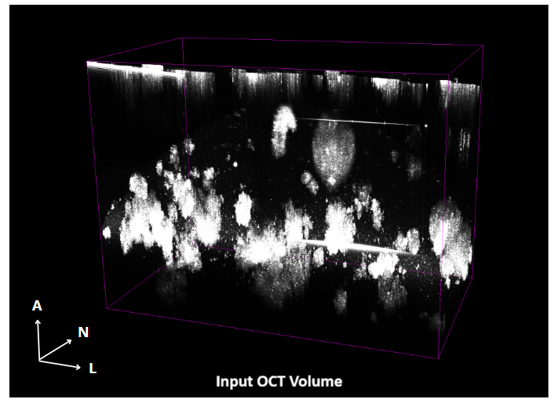
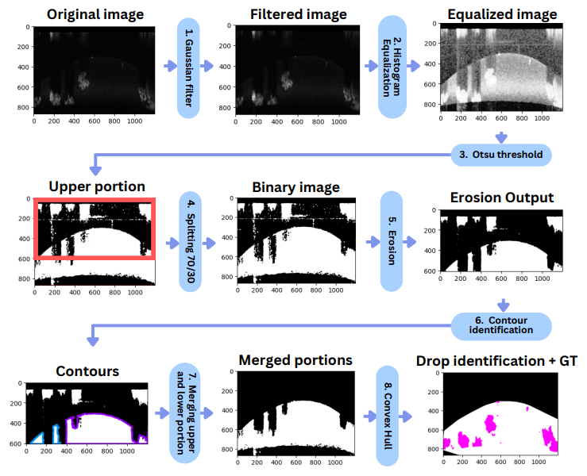
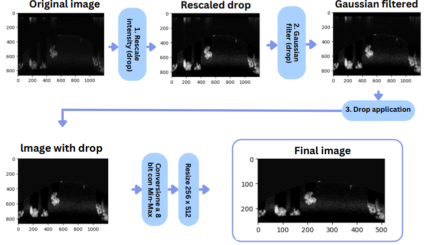
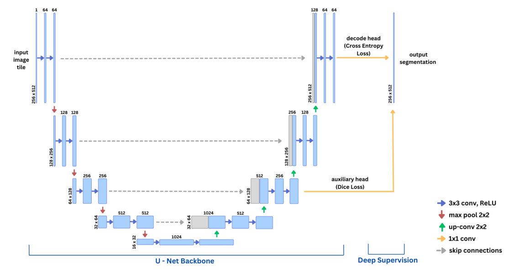
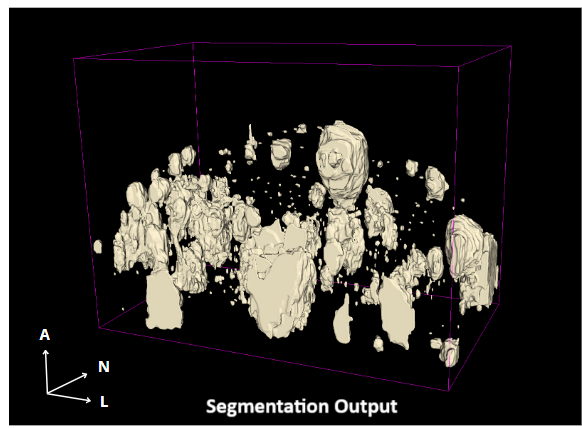
Intelligent ICU Extubation Readiness Predictor
MATLAB | Excel | Machine Learning | Predictive Modeling
We developed of a classifier designed to assess whether intubated patients in the Intensive Care Unit (ICU) are ready for extubation. We explored various data splitting methods to optimize model performance, including random splits, hierarchical clustering, and Self-Organizing Maps (SOM). We also tested and compared several models to determine the best approach for this task, including K-Nearest Neighbors (KNN), Artificial Neural Network (ANN), and Fuzzy Logic. Each model provided valuable insights into the effectiveness of machine learning in the context of ICU patient management.
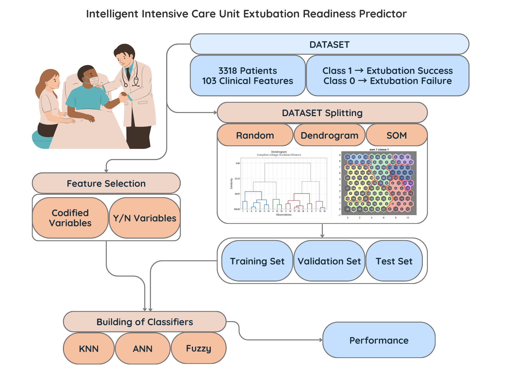
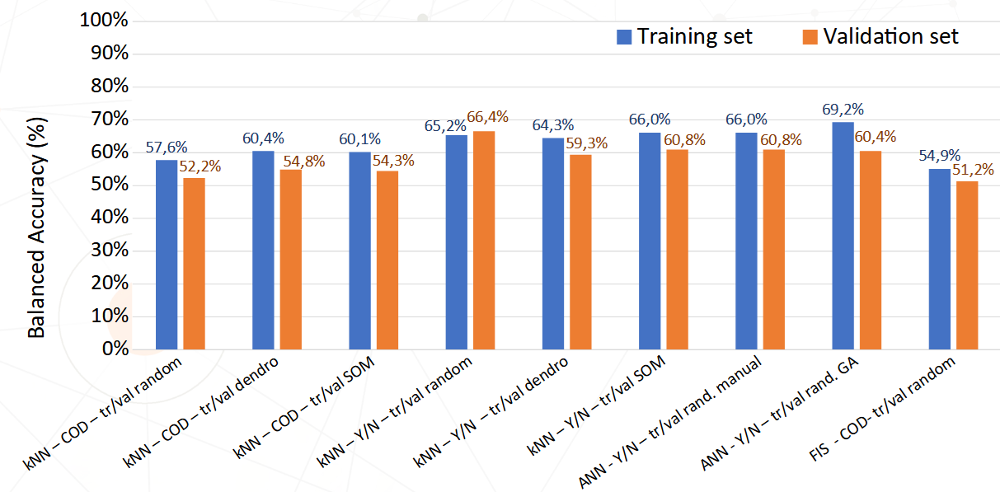
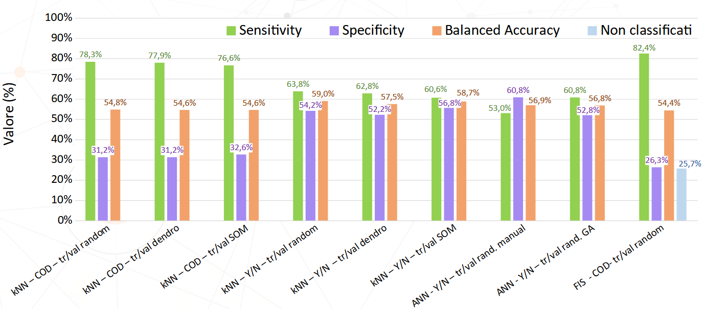
Skin Temperature Measurement System Prototype with ATMEGA328P
Assembly | ATmega328P | Embedded Programming | Laboratory & Bench Instrumentation
We designed and programmed of a contact thermometer based on the ATmega328P Arduino1 microcontroller, aimed at measuring and displaying the temperature on a 7-segment display. The ATmega328P is programmed to interact with a temperature sensor, allowing the measurement of temperature in Celsius or Fahrenheit, with the ability to switch between units by pressing a button. A LED is also included to visually indicate the system's power supply voltage, adding an extra layer of feedback to monitor the system's health.
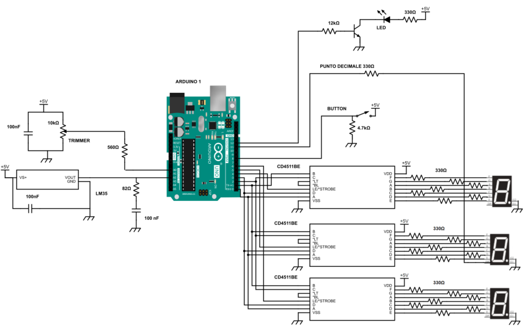
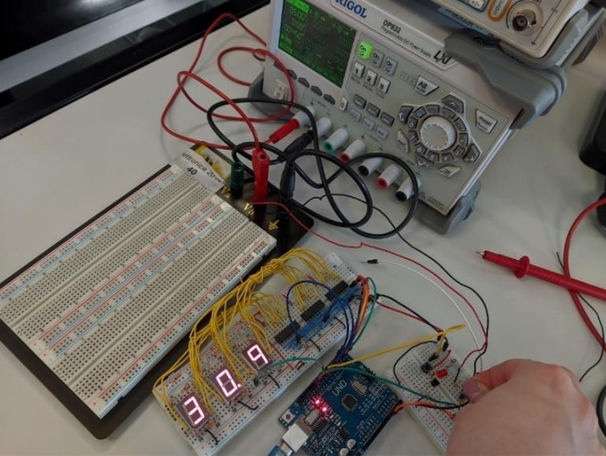
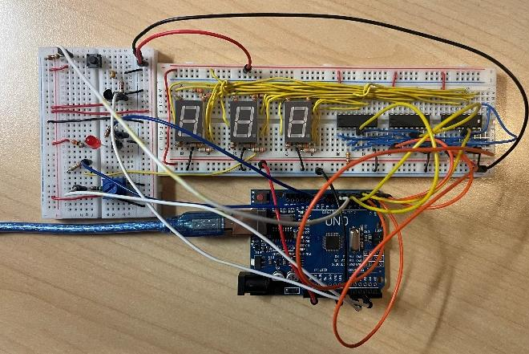
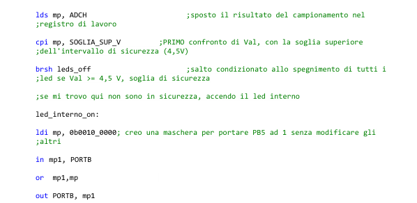
Smart Prosthesis: Myoelectric Classifier for Hand Movement Recognition
MATLAB | Data Collection | Time-Series Analysis | Machine Learning
This work is centered on the acquisition and analysis of sEMG signals to study control prostheses. We acquired sEMG signals using the Cometa differential sEMG amplifier and implemented an experimental protocol for data acquisition. Statistical analysis was performed on the signals at various levels of maximal contraction to assess myoelectric fatigue. We developed Machine Learning-based classifiers to determine the state of hand opening or closing, providing a foundation for prosthetic control.
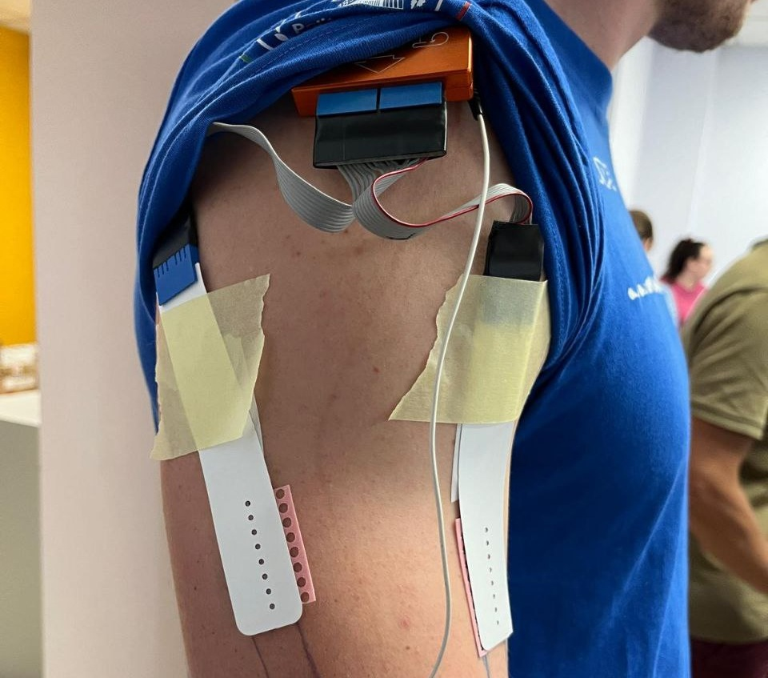
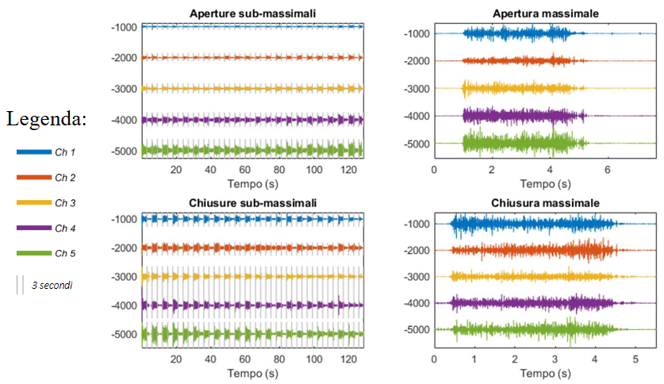
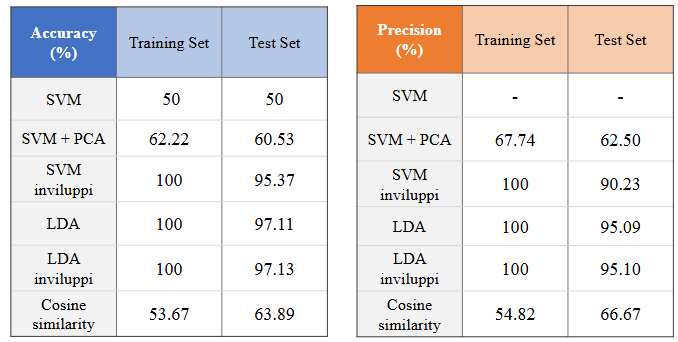